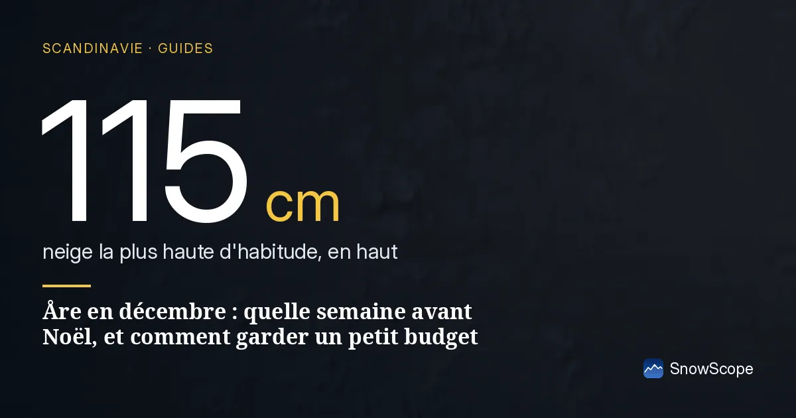

Åre en décembre : quelle semaine avant Noël, et comment garder un petit budget
Åre est la station la plus connue de Scandinavie, avec 116 km de pistes cartographiées, 48 remontées et 928 m de dénivelé. Pour décembre, nos 46 hivers d'historique répondent clairement : réservez la seconde moitié du mois. La semaine du 15 au 21 décembre, 89 % des hivers avaient 30 cm ou plus à mi-pente (853 m) ; la première semaine, seulement 61 %.
Consultez les prévisions neige en temps réel pour Åre sur l'application SnowScopeHauteurs de neige, alertes poudreuse et carte 3D, gratuitement.
Une semaine avant Noël, et l'argent
Les forfaits d'Åre sont vendus à prix dynamiques dans la boutique officielle en ligne de l'exploitant, et le 13 novembre 2026 nous n'y avons pu lire aucun prix fixe : nous n'en citons donc pas. Ce que l'on peut dire : avec des prix selon la date, les semaines calmes avant les vacances de Noël sont celles à viser, et acheter tôt en ligne est le principal levier à votre portée.
L'autre gros poste à Åre, c'est le lit. Réservez-le en fonction de la semaine choisie grâce aux chiffres de neige ci-dessous, pas l'inverse.


Quelle semaine de décembre choisir
À mi-pente, la part des hivers avec 30 cm ou plus passe de 61 % du 1er au 7 décembre à 76 % du 8 au 14, 89 % du 15 au 21 et 93 % la semaine de Noël. Un 15 décembre typique compte 34 cm en bas, 40 cm à mi-pente et 46 cm au sommet.
La semaine du 15 au 21 décembre est donc le bon compromis : des chances presque égales à Noël, avant la foule des vacances.
L'altitude compte, mais moins qu'on ne croit
Åre est une montagne au bord du lac Åresjön, et en décembre sa neige est plus égale de bas en haut que dans les Alpes : 34 cm à 389 m, 46 cm à 1318 m un 15 décembre typique. Le sommet est aussi venté : plus d'altitude ne veut pas toujours dire plus de neige.
Ce qui a changé, c'est le sommet. Sa moyenne de décembre est passée de 69 cm sur les 15 premiers hivers à 36 cm sur les 15 derniers, et la part des semaines de Noël avec 30 cm là-haut est tombée de 100 % à 80 %. La mi-pente a moins perdu en hauteur, mais autant en chances.
Plan B : Vemdalsskalet
Vemdalsskalet, plus au sud dans le Härjedalen, est l'alternative plus petite et plus calme de nombreuses familles suédoises. Sa neige de décembre est plus mince : 33 cm à mi-pente un 15 décembre typique et 63 % des hivers avec 30 cm la semaine du 15 au 21 décembre. Ses prix sont aussi dynamiques, et nous n'avons pu en lire aucun fixe.
En décembre, Åre offre de meilleures chances et bien plus de ski pour un modèle de prix semblable. Vemdalen a plus de sens à partir de janvier.
Conseils aux skieurs
- Réservez du 15 au 21 décembre : 89 % de nos hivers avaient 30 cm à mi-pente cette semaine-là, contre 61 % la première semaine.
- Achetez le forfait en ligne, tôt et hors vacances ; les prix suivent la demande.
- Les jours de vent, skiez les pistes basses et abritées ; le sommet est exposé.
- Journées courtes en décembre : organisez le ski selon la lumière, et lisez la prévision d'avalanches suédoise avant le hors-piste.
Autres cartes (sites externes)
Références et crédits
- Åre: official lift-pass page of the operator (prices by date; no fixed price quoted), checked 13 November 2026 www.skistar.com/en/winter/skipass/buy-skipass/lift-pass-are/
- Vemdalsskalet: official lift-pass page of the operator (prices by date; no fixed price quoted), checked 13 November 2026 www.skistar.com/en/winter/skipass/buy-skipass/lift-pass-vemdalen/
À propos de ces chiffres
Chiffres de neige : historique SnowScope, 46 hivers passés (1980-81 à 2025-26) aux altitudes de la station, corrigé de l'altitude (une estimation pour une zone, pas les bulletins de la station) ; « bonne neige » = 30 cm ou plus au sol en moyenne sur la semaine. Carte : notre hauteur habituelle au 15 décembre répartie sur le relief selon l'altitude. Pistes et remontées : cartographie OpenSkiMap. Forfaits : grilles officielles des stations, vérifiées le 13 novembre 2026 ; les prix peuvent changer.
Bulletins d'avalanche officiels: Lavinprognoser (Naturvårdsverket)
Citer ce bulletin
Pour la recherche, l'enseignement ou la presse : chiffres et graphiques réutilisables librement sous CC BY 4.0 avec cette citation.
SnowScope (2026), Åre en décembre : quelle semaine avant Noël, et comment garder un petit budget, https://snowscope.app/blog/fr/2026/11/are-december-skiing-sweden-price-snow.html, consulté le 2026-11-14
SnowScope (Atlas Labs). (2026, November 14). Åre en décembre : quelle semaine avant Noël, et comment garder un petit budget. SnowScope snow reports. https://snowscope.app/blog/fr/2026/11/are-december-skiing-sweden-price-snow.html
BibTeX
@misc{snowscope2026aredecemberskiingswedenp,
author = {{SnowScope (Atlas Labs)}},
title = {Åre en décembre : quelle semaine avant Noël, et comment garder un petit budget},
year = {2026},
month = nov,
howpublished = {\url{https://snowscope.app/blog/fr/2026/11/are-december-skiing-sweden-price-snow.html}},
note = {Published 2026-11-14 12:34 UTC; accessed 2026-11-14}
}· CC BY 4.0 · Méthodes, données et outils →
Åre : neige et température selon l'altitude, cet hiver vs l'hiver dernier (outils) →
Suivre Åre
Gratuit : un message quand la neige arrive, et la météo chaque matin.